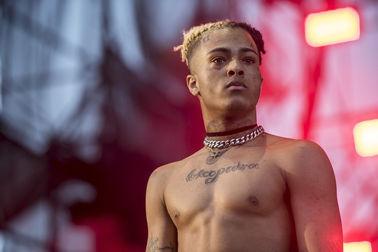

Jahseh Onfroy, an American recording artist better known as XXXTentacion, was shot and killed on June 18, 2018, at the age of 20, in an apparent robbery at a motorcycle dealership in Deerfield Beach, Florida. The shooting occurred at 3:57 p.m. local time when Onfroy was leaving the dealership.[1] He was shot once in the neck[2] and was in critical condition before being pronounced dead at 5:30 p.m. after rumors of being rushed to Broward Health North. His death occurred only a few hours before the murder of fellow rapper Jimmy Wopo.
